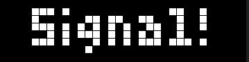

SignalDetectorPlugin

The plugin is able to detect a signal, which can be combined with up to 2 frequencies.
Each frequency must be detected for a specific configureable time.
As long as nothing is detected, the plugin will disable itself.
If a signal is detected, it will be shown on the display for the configured slot duration. After slot duration timeout or user changed the slot, the plugin will be disabled until next signal detection.
Additional a push notification can be configured. By default a GET is triggered. Using "GET" or "POST" as prefix its configureable. Example: "POST http://..."
REST API
Get configuration
GET {{ORIGIN}}/rest/api/v1/display/uid/<PLUGIN-UID>/signalDetectorGET {{ORIGIN}}/rest/api/v1/display/alias/<PLUGIN-ALIAS>/signalDetector- PLUGIN-UID: The plugin unique id.
- PLUGIN-ALIAS: The plugin alias name.
Set configuration
POST {{ORIGIN}}/rest/api/v1/display/uid/<PLUGIN-UID>/signalDetector?text=<TEXT>&pushUrl=<PUSH-URL>&frequency=<FREQUENCY>&minDuration=<MIN-DURATON>&threshold=<THRESHOLD>POST {{ORIGIN}}/rest/api/v1/display/alias/<PLUGIN-ALIAS>/signalDetector?text=<TEXT>&pushUrl=<PUSH-URL>&frequency=<FREQUENCY>&minDuration=<MIN-DURATON>&threshold=<THRESHOLD>- PLUGIN-UID: The plugin unique id.
- PLUGIN-ALIAS: The plugin alias name.
- TEXT: The text to show on the display if signal is detected.
- PUSH-URL: The URL which will be triggered if signal is detected.
- FREQ-ID: The id of the frequency (starting with 0).
- FREQUENCY: The frequency in Hz.
- MIN-DURATION: The min. duration in ms the frequency must be detected.
- THRESHOLD: The frequency must be over this threshold to be able to detect it. Usually good values are above 2000.